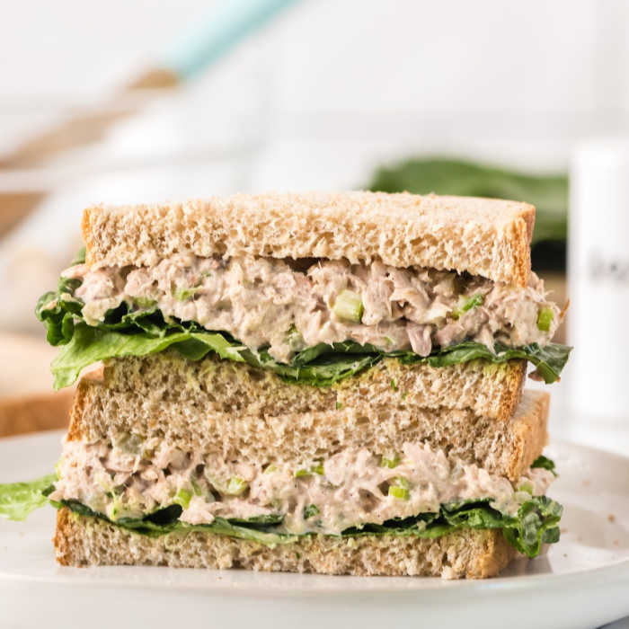

Tuna Sandwich
Breakfast, lunch and dinner of champions
There's nothing better a satisfying than a good ol tuna sandwich! It's easy to make, cheap and best of all they
taste amazing.
If you forgot how to make a tuna sandwich, you've come to the right place. With these simple ingredients
and steps, you'll be munchin on these bad boys in no time!
Ingredients
- 1 can of tuna
- 1 tbsp of mayo
- black pepper
- 2 slices of bread of your choosing
Steps
- Open can of tuna with can opener
- Use a spoon to scoop the tuna out of the can and into a bowl
- Using a spoon, scoop 1 tbsp of mayo and put unto tuna
- Lightly season black pepper into mix
- Using a utensil of your choice, start mixing ingredients together
- Get two slices of bread, you can toast it but it's not required
- Evenly spread in between the slices of bread
- Enjoy!